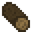
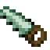

支撑梁
支撑梁
在TerraFirmaCraft中, 天然岩石并不稳定, 有发生塌方的危险. 在某些情形下, 多种石头可能像下雨一样同时落向你的头顶, 包括未加工岩石, 矿石, 平滑岩石 和 钟乳石锥.
支撑梁可以用于预防塌方.
只要玩家挖掘任何未加工岩石, 附近的未被支撑的未加工岩石就可能发生塌方. 一旦塌方发生了, 有支撑的岩石也会开始塌方.
在天然洞穴顶部的岩石是天然被支撑的. 如果未加工岩石的下方有一个无法发生塌方的固体方块(详见下文), 那么这一个岩石方块也是被支撑的. 与此不同的是, 支撑梁可以一次支撑一大片区域.
支撑梁



8

支撑梁可以用锯和任意类型的原木合成.
在其他方块上放置支撑梁就可以产生三格高的垂直支撑梁, 在梁的下方必须有固体方块作为支撑.
多方块结构
放置水平支撑梁可以连接距离不超过5个方块的两个垂直支撑梁.
只有水平支撑梁才能让附近的方块被支撑. 以水平支撑梁为中心, 在9 x 5 x 9范围内的任何方块都是被支撑的.
除了可以用支撑梁作为支撑, 也可以在岩石下面放一个固体方块(例如更多的岩石)来支撑它. 但是需要注意的是, 楼梯和台阶等非固体方块, 以及平滑岩石, 是无法提供支撑的.
凿制
最后还有一个重要的事项, 凿制岩石也可能导致塌方. 正如挖掘岩石那样, 对未加工岩石进行凿制有可能导致附近发生塌方.
记住: 挖矿要注意安全!